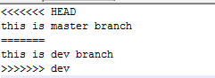

1 创建分支
我们先建立版本库，并添加一个readme.md文件
mkdir test
cd test
git init
echo 'master init'>readme.md
git add --all
git commit -m 'master init'
接下来创建版本库
可以使用
git checkout -b dev
或者
git branch dev
git checkout dev
第一条命令是创建版本库并切换版本库
我们可以使用以下命令查看版本库
git branch
git branch命令会列出所有分支，当前分支前面会标一个*号
2合并分支
我们切换到dev分支，做些修改
git checkout dev
echo 'dev update'>>readme.md
git add --all
git commit -m 'dev update'
我们在切换回master，发现readme.md并没有被修改，这是因为修改是在不同分支进行的，彼此看不到，我们可以选择合并
git checkout master
git merge dev
我们把dev合并到了master，再来查看readme.md，修改体现了。
使用--no-ff参数可以创建新的commit
git merge --no-ff -m 'merge dev '
3删除分支
合并完dev分支，我们可以把它删除了
git branch -d dev
如果分支没有进行合并操作，删除是不允许的，可以使用-D参数，强制删除
git brach -D dev
4冲突解决
内容冲突
git checkout master
echo 'this is master branch'>readme.md
git add --all
git commit -m 'master commit readme 1'
切换到dev
git checkout dev
echo 'this is devbranch'>readme.md
git add --all
git commit -m 'dev commit readme 1'
回到master合并
git checkout master
git merge dev

可自行手动把冲突处理掉,再删除dev即可
mergetool可视化工具
beyondcompare，diffmerge，tortoisgit
5bug分支
git stash
git stash list
git stash pop
git stash apply stash@{0}